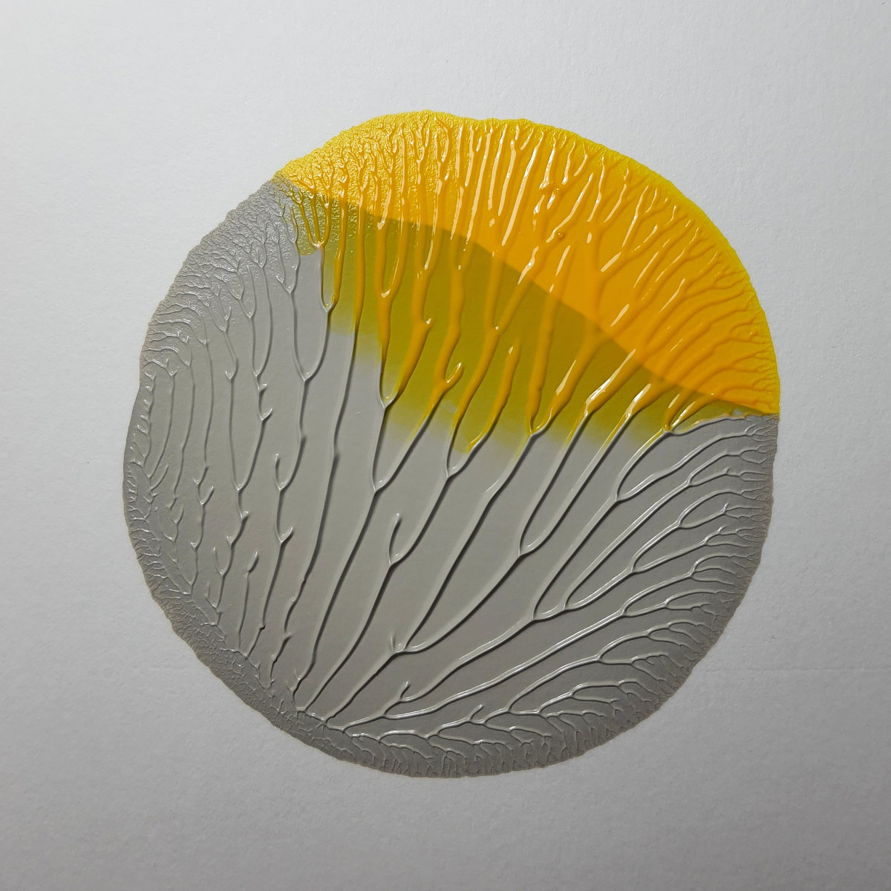
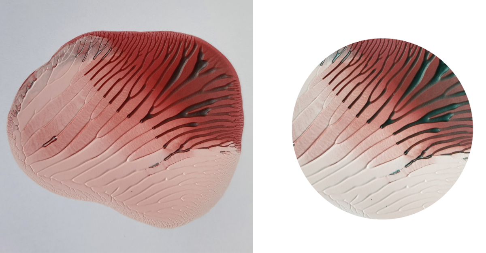
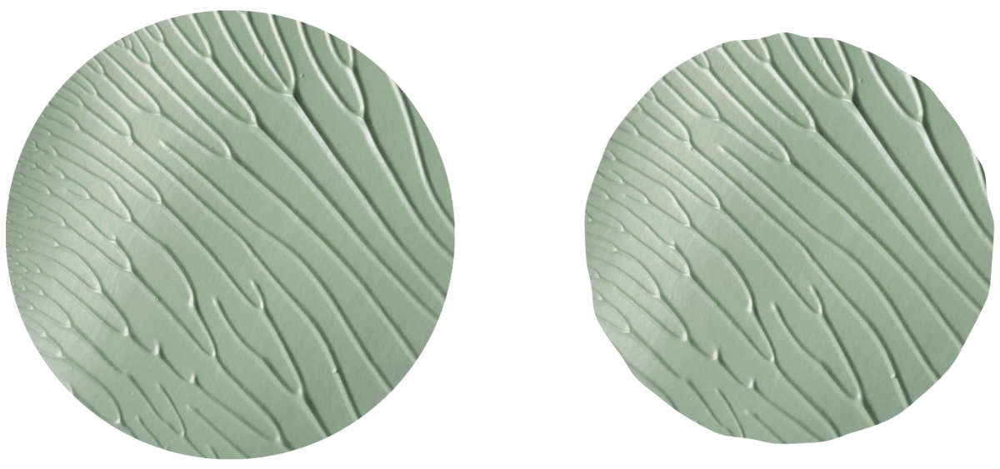
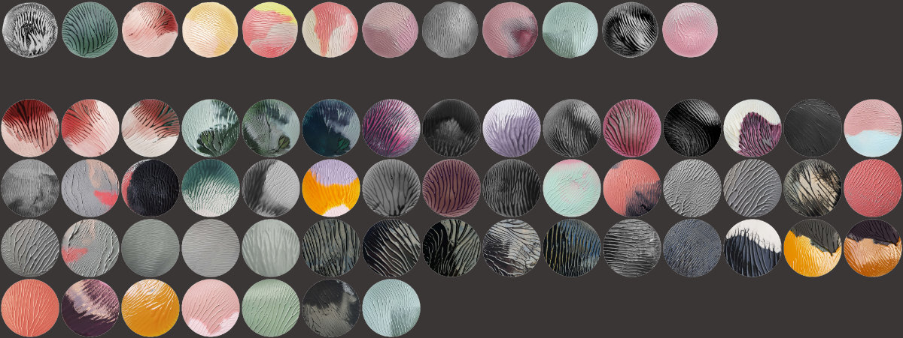
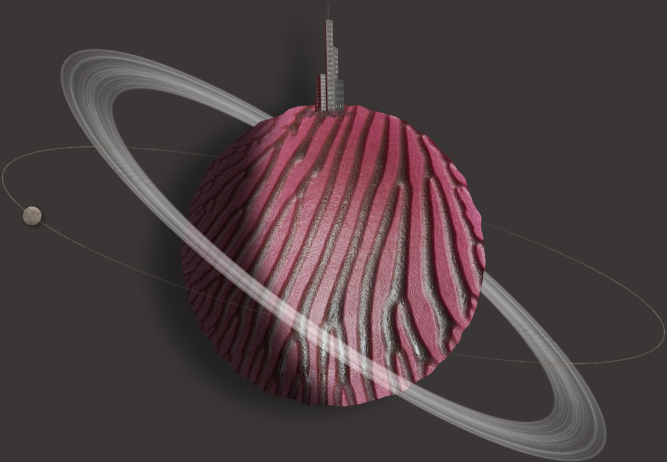

Orbicular
Generative constelations of planets, a combination of digital and non-digital art.
Created in collaboration with abstract painter Tom Blameworth.
I took care of the code, Tom used paint. We shared the idea.

Breakdown
Each variation consists of at least one planet.
Each planet is textured with one of over 60 photograped painted "orbs".
Little moons, and stars are also bitmap-based, rest of the picture is generated with code.
Part 1 - Traditional art
Paint orbs:
Tom developped a technique, where by squeezing paint between two pieces of paper, and then unfolding them in a particular, controlled manner, he's able to achieve those natual, flowing patterns.
Some of them turned out very round:
Those that didn't but we thought are interesing, were cropped to a perfect circle:
And then futher modifed programmaticaly to have uneven edge:
The whole collection:
Part 2 - Digital, generative

Every planet has a chance to spawn geenrative elements:
city
planetary ring
moon with an orbit
City
-napisz o: miasto losuje swoją szerokość kątową, oraz relatywną do orba wysokość (pokaż kilka miast)
-kazdy budynek losuje swoją rotację, i zależnie od niej moze miec okna, lub nie (pokaż kilka solo budynkow)
-oswietlenie na mieście jest left/right, zgodnie z kierunkiem oświetlenia na planecie (pokaż to samo miasto w 2 wersjach) (może to niech będzie w sekcji "Light direction")
-miasto może byś po dziennej, lub nocnej stronie, i zmienia kolory accordingly
Planetary ring
-rotacja, szerokość (kilka przykładów)
-precyzyjne maskowanie obrazkiem części za planetą (pokaż tą samą planete z zamaskowanym, i nie zamaskowanym)
Moon
-rozne pozycje moona, zawsze widoczny
-gradient maskujacy
Light direction
-cień z dobrej strony
-cien na planecie też
-kierunek światła na budynkach
>przykłady różnych oświetleń na tej samej planecie
Mask creation and extraction
tutaj powinno być pokazane że kodem docinam krztałt planety
pokaż też maskę planety z miastem
Color sampling
-pokaż przykład kolor samplera - planeta + obrazek samplera.
-opowiedz o szukaniu 2 najodleglejszych kolorów
Color utils
-easy to understand color manipulations in HSL space
napisz: uzywane wszędzie w projecie;
pokaż linikję kodu, i jak ona wpłynęła na swatch koloru;
ze 3 takie przykłady
Orb spawning
1, 2, or 3 can spawn
spawned in a sequence
looking for a place without collision
-pokaż przykłady z pokazanymi hitboxami
Background
-gradient - także korespondujący ze światłem
-randomly spawned stars, in two
notatki:
-dodaj film/gifa z przykłądami na górze
-lightbox do powiekszania obrazków?
-gdy są 2 obrazki obok siebie, to powinny być osobne, w osobnych divach?
-dopisz jaka była w tym twoja rola
-najpierw generative, potem traditional?